特定穴一覽表
五輸穴說明
子母補瀉計算
原穴、絡穴說明
原絡治療查找
俞穴、募穴說明
俞募治療查找
會穴、郄穴說明
會郄治療查找
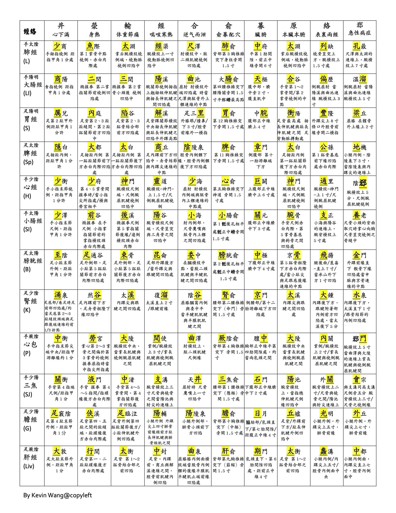
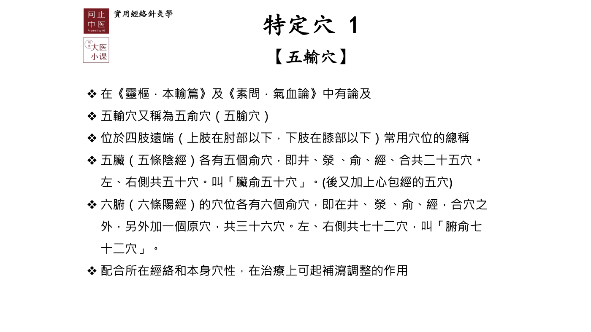
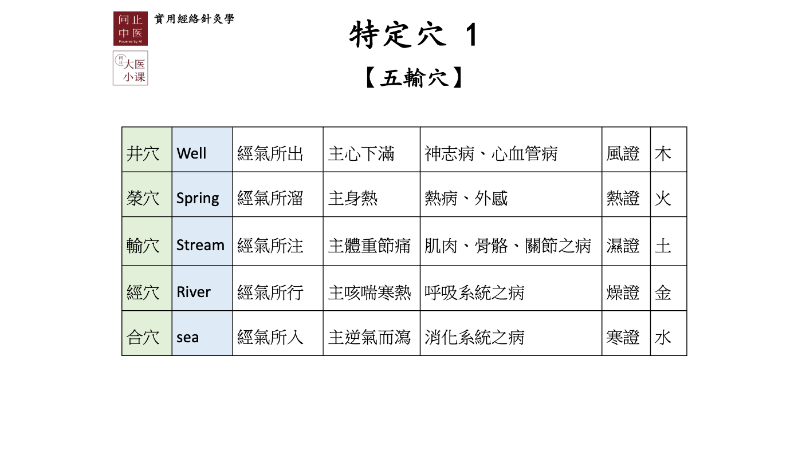
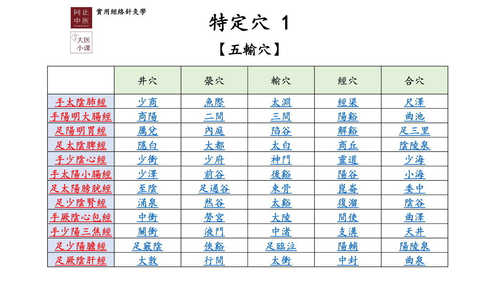
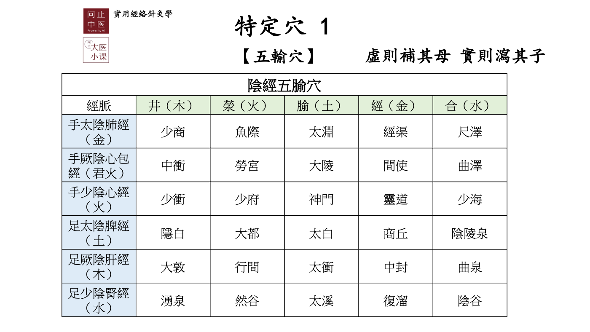
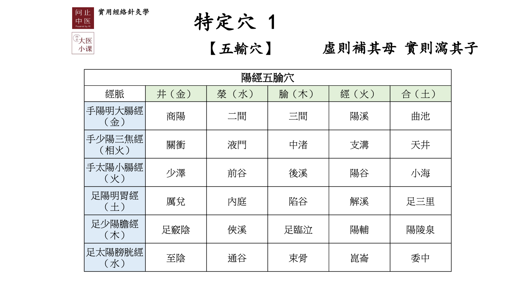
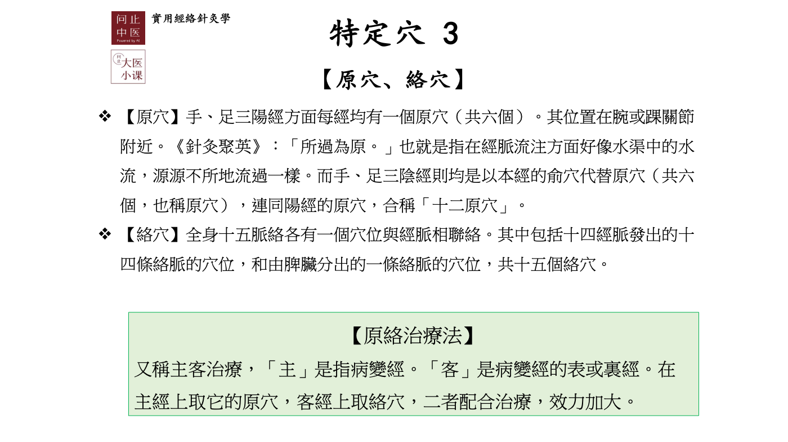
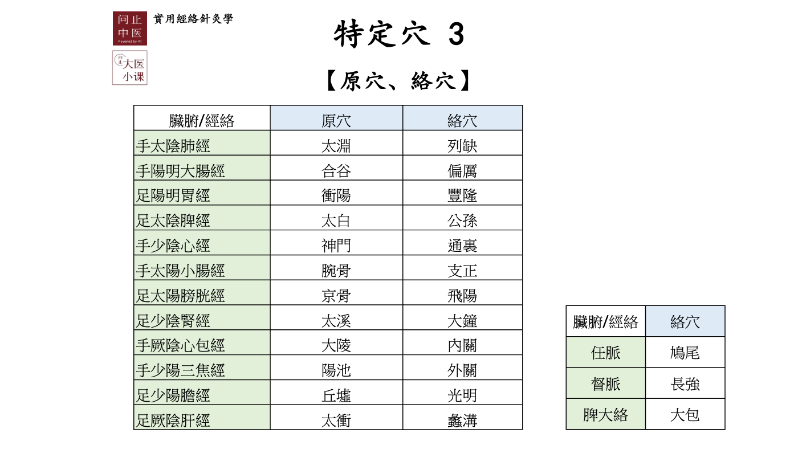
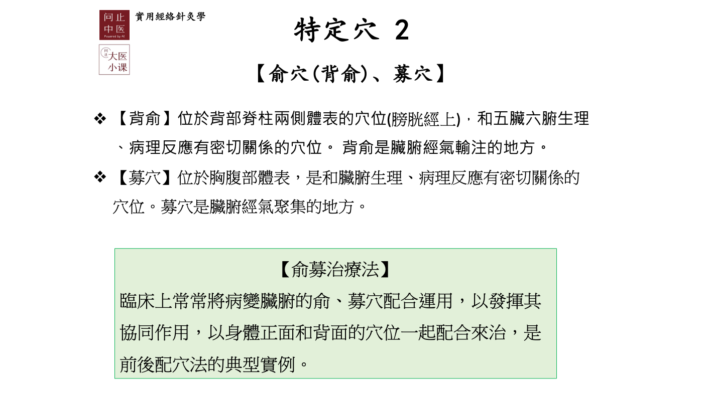
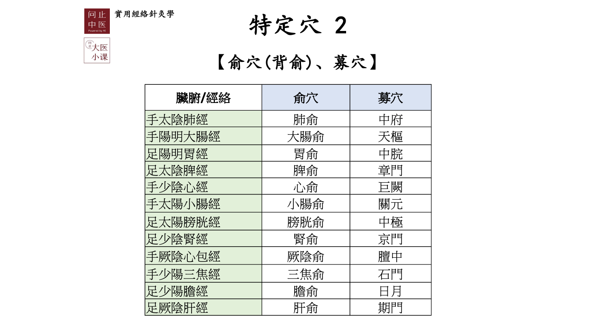
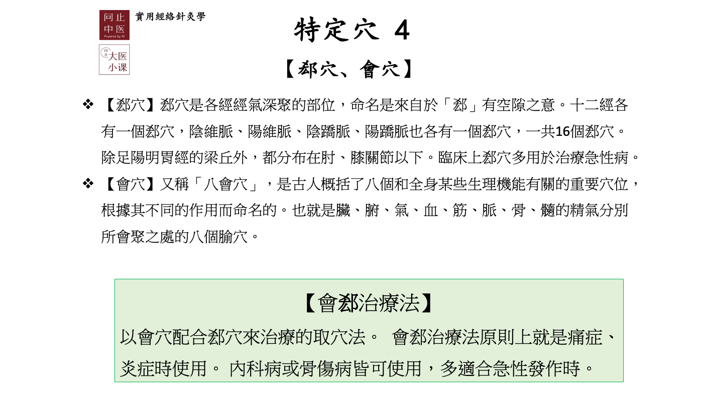
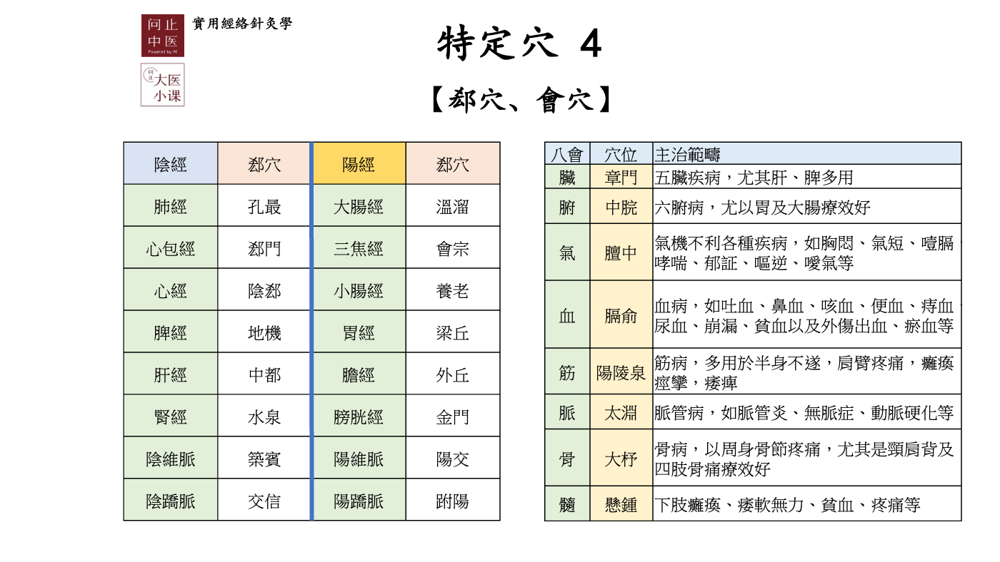
Lu肺
LI大腸
ST胃
SP脾
HT心
SI小腸
BL膀胱
KI腎
PC心包
SJ三焦
GB膽
LR肝
目前所選經絡:
本經擇穴
異經擇穴
Lu肺
LI大腸
ST胃
SP脾
HT心
SI小腸
BL膀胱
KI腎
PC心包
SJ三焦
GB膽
LR肝
目前所選經絡:
原絡治療
Lu肺
LI大腸
ST胃
SP脾
HT心
SI小腸
BL膀胱
KI腎
PC心包
SJ三焦
GB膽
LR肝
目前所選經絡:
俞募治療
肺
大腸
脾
胃
心
小腸
腎
膀胱
心包
三焦
肝
膽
陰維
陽維
陰蹻
陽蹻
臟
:五臟疾病，尤其肝、脾多用
腑
:六腑病，尤以胃及大腸療效好
氣
:氣機不利各種疾病，如胸悶、氣短、噎膈、哮喘、郁證、嘔逆、噯氣等
血
:血病，如吐血、鼻血、咳血、便血、痔血、尿血、崩漏、貧血以及外傷出血、瘀血等
筋
:筋病，多用於半身不遂，肩臂疼痛，癱瘓痙攣，痿痺
脈
:脈管病，如脈管炎、無脈症、動脈硬化等
骨
:骨病，以周身骨節疼痛，尤其是頸肩背及四肢骨痛療效好
髓
:下肢癱瘓、痿軟無力、貧血、疼痛等